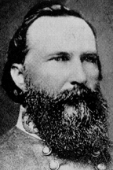

|

|

|
|
|
Confederate general James Longstreet was born January 8,
1821, in Edgefield District, South Carolina. He grew up in
Georgia, on his father's farm near Gainesville and at
Westover, his uncle's Augusta cotton plantation. After his
father died in 1833 and his mother moved to Alabama, the boy
remained with his uncle, Augustus Baldwin Longstreet, a
lawyer, states' rights advocate, and prominent Georgia
intellectual. With an appointment from Alabama Longstreet
entered West Point in 1838. Among his classmates were
Ulysses S. Grant, Lafayette McLaws, and George E. Pickett.
Longstreet first experienced battle in the Mexican-American
War and was seriously wounded at Chapultepec. After the
war, he married Maria Louisa "Louise" Garland, daughter of
brevet Brigadier General John Garland.
With the coming of the Civil War Longstreet opposed
secession. In 1861, however, he resigned his commission and
traveled to Richmond from his western post to offer his
services to the South. Despite having no connection to the
state, he received command of a brigade of Virginia
volunteers. While Longstreet's lack of identification with
a single state would later be a political liability, in July
1861, he led his brigade well at Blackburn's Ford, winning
the confidence of General Joseph E. Johnston and promotion
to major general.
Longstreet suffered personal tragedy in January 1862,
when three of his four living children died in Richmond of
scarlet fever (two others had previously died in infancy).
He performed inconsistently during the spring campaigns of
1862, skillfully commanding a rearguard action at
Williamsburg on May 5th, but badly bungling an attack at
Seven Pines on May 31st. After Seven Pines, General Robert
E. Lee replaced the seriously wounded Johnston as commander
of what was now the Army of Northern Virginia. During the
Seven Days battles, Longstreet impressed Lee with his hard
fighting, and in July he became Lee's second in command. At
Second Manassas in late August, Longstreet counseled Lee to
adopt defensive battle tactics, demonstrating the wisdom of
this advice with a devastating flank assault on the
attacking Federals. At Antietam in September, Longstreet
fought tenaciously, earning promotion to lieutenant general
and formal command of the First Corps.
The battle at Fredericksburg in December 1862 confirmed
the advantage of holding a good defensive position.
Longstreet's entrenched corps took the brunt of the federal
army's futile assault on Marye's Heights while suffering
only minimal casualties. Briefly commanding two detached
divisions in early 1863, Longstreet rejoined Lee's army
after its May victory at Chancellorsville. Lee reorganized
his troops into three corps following General Thomas
Jackson's death. Longstreet commanded the First, General
Richard S. Ewell the Second, and General A. P. Hill the new
Third Corps. In May, Longstreet (who thought the key to
Confederate victory lay in the western theater) agreed with
Lee's plan to invade Pennsylvania, but he urged Lee to adopt
defensive tactics should a battle occur. In late June, when
Lee's army came in contact with Union forces (commanded by
General George G. Meade) near Gettysburg, Lee ignored his
advice.
On July 1st, Ewell's Second Corps forced the First and
Eleventh corps of the Army of the Potomac to retreat south
through the town. While the disorganized federal troops
waited on Cemetery Hill for reinforcements, Ewell and his
subordinate, General Jubal A. Early, hesitated to press
their numerical advantage by attacking the hill. When
Longstreet arrived on the field, he noted the strong
position held by the newly reinforced Union troops and
advised Lee to occupy a defensive position and force Meade
to assume the offensive. To Longstreet's dismay, Lee
indicated his intention to attack the federal army at
Gettysburg the following day. Lee ordered Longstreet to use
the two divisions that he had on the field to attack the
Union's left on the morning of July 2nd. Confederate
reconnaissance proved unreliable, however, and to avoid
detection by the enemy Longstreet led his troops on a
time-consuming countermarch. His attack, which was to have
occurred simultaneously with an assault on the Union's right
flank, did not begin until late afternoon. By that time, the
Union army had extended its line south of Cemetery Ridge and
Longstreet found himself directing a frontal rather than a
flank attack. His two divisions took the low ground in
front of the Union position, inflicting serious damage on
the Union Third Corps. Longstreet blamed his failure to
occupy the high ground on lack of reinforcements and poor
coordination with Lee's other two corps.
Over Longstreet's objections, Lee decided to launch a
frontal assault against the Union position on July 3rd.
Longstreet reluctantly directed the attack, which consisted
of a ferocious artillery bombardment followed by a massed
infantry assault, and claimed later that he would have
prevented it if he had been able to do so. "Pickett's
Charge" was a disaster for the Confederate Army, which lost
more men and officers than it could replace.
After Gettysburg, Longstreet maneuvered himself into a
western command in General Braxton Bragg's Army of the
Tennessee, and directed a rout of the Federal forces at
Chickamauga on September 20th, ironically employing a
frontal assault. The Federals retreated to Chattanooga,
where Longstreet's misjudgment of the tactical situation at
Lookout Mountain allowed the Federals to reopen their supply
lines. His relationship with Bragg deteriorating,
Longstreet detached his corps and laid siege to Knoxville,
remaining there until April 1864.
In East Tennessee he became embroiled in bitter
internecine disputes over his choice to succeed Hood who had
been wounded at Chickamauga and his decision to relieve
McLaws for poor conduct. Searching for a way to alter the
Confederacy's grim prospects, he unsuccessfully proposed an
invasion of Kentucky as a means of demoralizing the North
and boosting opposition to President Lincoln's reelection.
Longstreet returned to Virginia at Lee's request, and was
accidentally shot by his own troops in the Wilderness on May
4th. He resumed his command in October after recuperating
in Georgia from serious throat and shoulder wounds.
Longstreet remained in Virginia during the rest of the Civil
War and was with Lee at Appomattox.
Controversy marked Longstreet's postwar years. In 1865,
he moved to New Orleans with his family (which included four
children born after 1863) and successfully entered the
insurance and railroad businesses. He soon infuriated
Confederate veterans by publishing his recommendation that
they cooperate with federal Reconstruction policies. In a
move that branded him forever as a "scalawag" traitor to the
South, Longstreet reacted to his critics' outrage by joining
the Republican Party.
Lee's death in 1870 made the unpopular Longstreet
vulnerable to false accusations. In 1872, Jubal Early
launched a self-serving campaign to blame Longstreet for
Lee's defeat at Gettysburg. In Early's distorted history,
Lee had intended Longstreet to attack at dawn on July 2nd,
and by failing to do so Longstreet had cost the Confederacy
the battle and the Civil War. Longstreet's belligerent
attempts to clear his name backfired, and his criticism of
Lee's offensive battlefield tactics prompted Lee's former
staff officers--who had refuted the dawn attack
accusation--to charge that Longstreet's failings at
Gettysburg included deliberate slowness on July 2nd and
insubordination on July 3rd.
The "Gettysburg Series" published in Early's Southern
Historical Society Papers in the late 1870s sealed
Longstreet's lasting reputation as scapegoat and traitor, as
did his acceptance of Republican patronage. Longstreet's
five articles for the Century Magazine Civil War
series criticized Jackson and Lee and inflated his own
military accomplishments. A pariah in the South, he became
a sought-after speaker at Northern veteran reunions.
Longstreet's memoirs, published in 1894, represented his
final, futile attempt to settle scores and right the wrongs
he had endured. In 1897 retired and aged seventy-six, the
widowed Longstreet married a second wife, the vivacious
Helen Dortch, who was less than half his age. He died on
January 2, 1904, in Gainesville, Georgia. His devoted young
widow spent her remaining fifty-eight years attempting to
restore his reputation.
Source: Joan Waugh, ed., Facts on File Encyclopedia of American
History: Civil War and Reconstruction, 1856 to 1869 (New York: Facts on
File, 2003), 214-216.
|